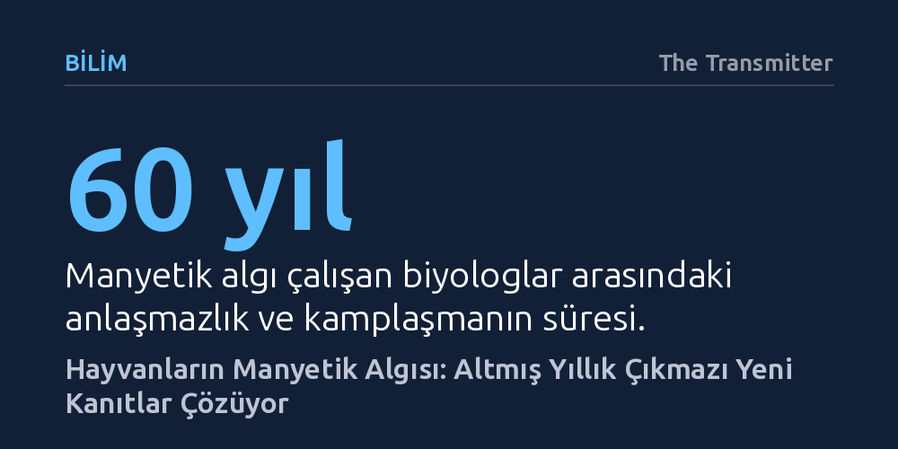

BILIM · The Transmitter · 2026-09-12
Manyetik kristaller ile kuantum kimyası teorileri arasında altmış yıldır kilitlenen manyetik duyu alanı, göçmen böceklerden gelen yeni veriler ve deniz kaplumbağalarında birden fazla mekanizmanın birlikte çalıştığını gösteren bulgularla çıkmazdan kurtuluyor.
Biyolojideki keskin bilimsel kamplaşmaların aksine, canlıların Dünya'nın manyetik alanını algılamak için birden fazla fiziksel mekanizmayı aynı anda kullanabileceğini gösteriyor.

Hayvanların yön bulmak için Dünya'nın manyetik alanını nasıl hissettiğini araştıran biyoloji sahası, dışarıdan bakıldığında büyüleyici görünse de içeride altmış yıldır süregelen şiddetli anlaşmazlıklarla boğuşuyor. Lund Üniversitesi'nden Eric Warrant'ın ifadesiyle "bilimin talihsiz bir alanı" olarak nitelenen bu disipline yeni katılan araştırmacılar, kendilerini kökleşmiş bir krizin ve iki uzlaşmaz kampın tam ortasında buluyor.
Alandaki bu güvensizlik ortamı sebepsiz değil; ders kitaplarına girmiş temel iddialar bile sarsıcı biçimde çökebiliyor. Örneğin 2011 yılındaki Kraliyet Seyrüsefer Enstitüsü toplantısında genç bir araştırmacının sunduğu veriler, yıllardır kabul gören yerleşik bir bulguyu tamamen çürüttü. Benzer şekilde, sirkesinekleri üzerinde yürütülen ve on beş yıllık emeğe dayanan kritik bir çalışmanın bağımsız laboratuvarlarca tekrarlanamaması, araştırmacıların birbirine olan inancını zedeledi.
Manyetik duyu (manyetoreseptör) araştırmaları ilk ortaya çıktığında, bilim dünyası konuyu ciddiye alıp tartışmaya bile değer görmemişti. Gözle görülmeyen, elle tutulamayan zayıf bir manyetik alanın canlılar tarafından algılanabileceği fikri uzun süre bilim dışı bir iddia gibi karşılandı.
Bu yaygın şüphecilik ancak 1990'lı yıllarda kırılabildi. Kuşların yanı sıra deniz kaplumbağaları, semenderler ve hatta bakterilerin bile manyetik alana duyarlı olduğunu gösteren somut kanıtlar biriktikçe tartışmanın yönü değişti. Bilim insanları artık hayvanların bu alanı hissedip hissetmediğini değil, bu olağanüstü algıyı biyolojik olarak hangi mekanizmayla gerçekleştirdiğini sorgulamaya başladı.
Manyetik sinyallerin sinir sistemine nasıl iletildiğine dair iki ana teori ortaya atıldı ve alan ikiye bölündü. İlk yaklaşım olan manyetit teorisi, hücrelerin içinde bulunan mikroskobik demir oksit kristallerine dayanır. Hayvan manyetik alan içinde hareket ettikçe bu kristaller manyetik kuvvete göre yönelir; bu mekanik çekim hücre zarlarındaki iyon kanallarını açarak ya da kimyasal sinyal yollarını tetikleyerek beyne yön bilgisini iletir.
İkinci yaklaşım ise kuantum biyolojisine dayanan radikal çifti hipotezidir. Bu modele göre göz retinasındaki kriptokrom proteinleri mavi ışığı soğurduğunda elektronlar yer değiştirir ve dengesiz elektronlara sahip radikal molekül çiftleri oluşur. Bu hassas kuantum durumundayken Dünya'nın manyetik alanı moleküllerin birbiriyle girdiği tepkimeleri değiştirir ve bu değişimler nöronal sinyallere dönüştürülerek canlıya yönünü gösterir.
Hangi teorinin doğru olduğunu kesinleştirmek, mikroskobik düzeydeki bu zayıf manyetik etkileri canlı dokularda doğrudan gözlemlemenin olağanüstü zorluğu nedeniyle yıllarca başarılamadı. Her iki tarafın da karşı tarafı ikna edecek kesin kanıt sunamaması alanı uzun süren bir açmaza mahkûm etti.
Fakat son dönemde göçmen böceklerden elde edilen doğrudan veriler bu tıkanıklığı nihayet aşma noktasına getirdi. Dahası, geçen yıl deniz kaplumbağaları üzerinde yayımlanan bir araştırma, aynı canlı türünün bile birden fazla manyetik algılama mekanizmasını aynı anda kullanabileceğine işaret etti. Biyologların tek bir mekanizma bulma saplantısını esneten bu bulgular, altmış yıllık teorik kavgayı bitirip alana yeni bir yön kazandırıyor.